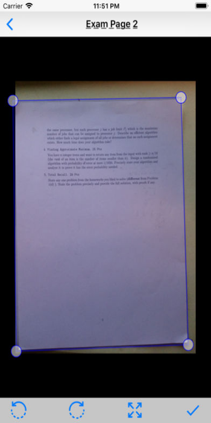
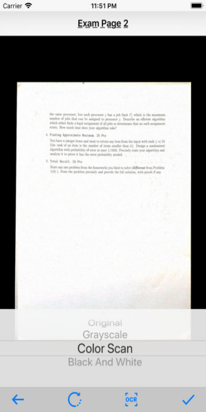
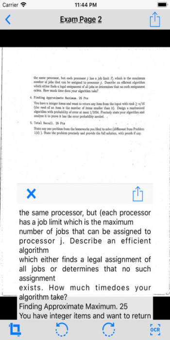
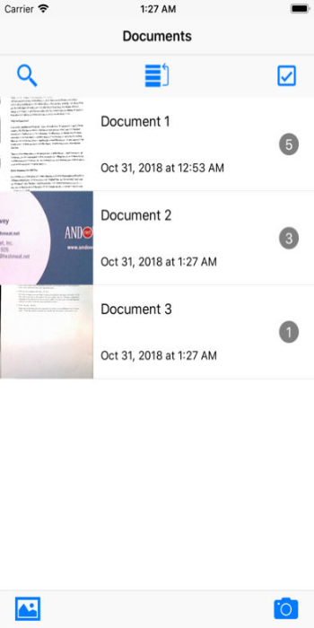
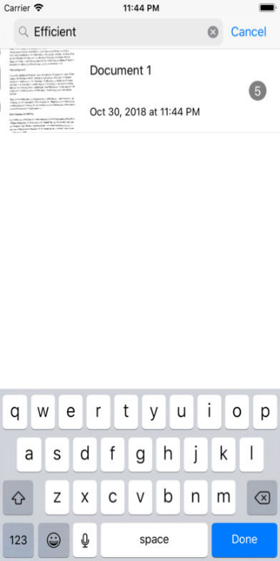
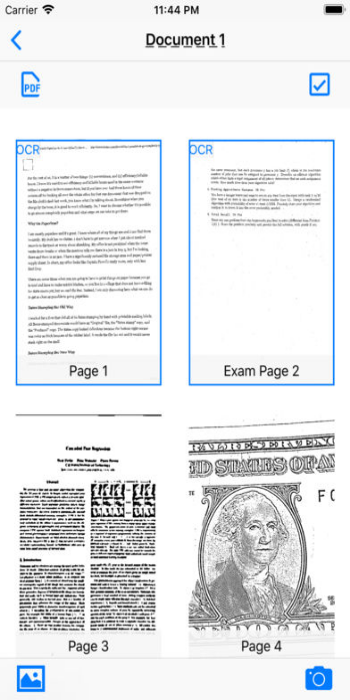
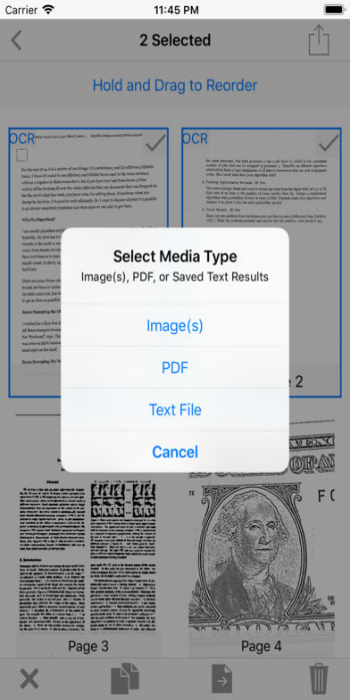

Basic Scan - PDF Scanner
Minimal Camera Scanner
Basic Scan is a simple way to capture, digitize, and share your documents, letters, notes, business cards, receipts, cheques, sketches, book pages, homework, and more.
Quickly and easily convert your photos and pictures to scanner quality images or PDFs, and recognize the text using OCR (optical character recognition) to search for keywords.
Export as an email, message, and more..